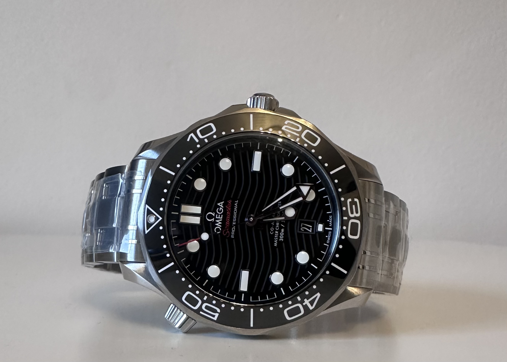
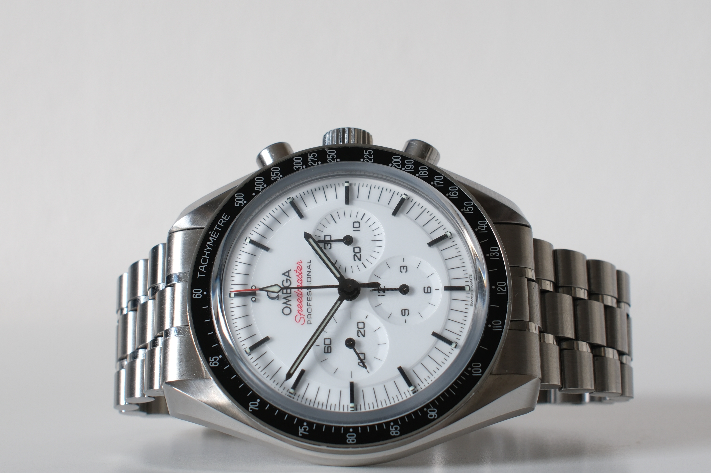
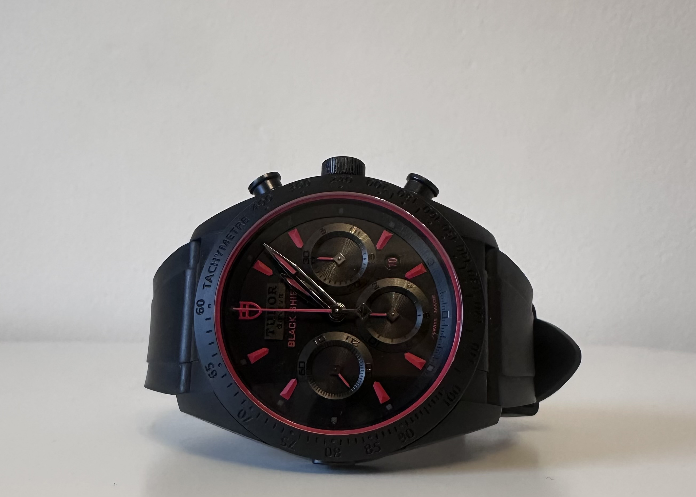
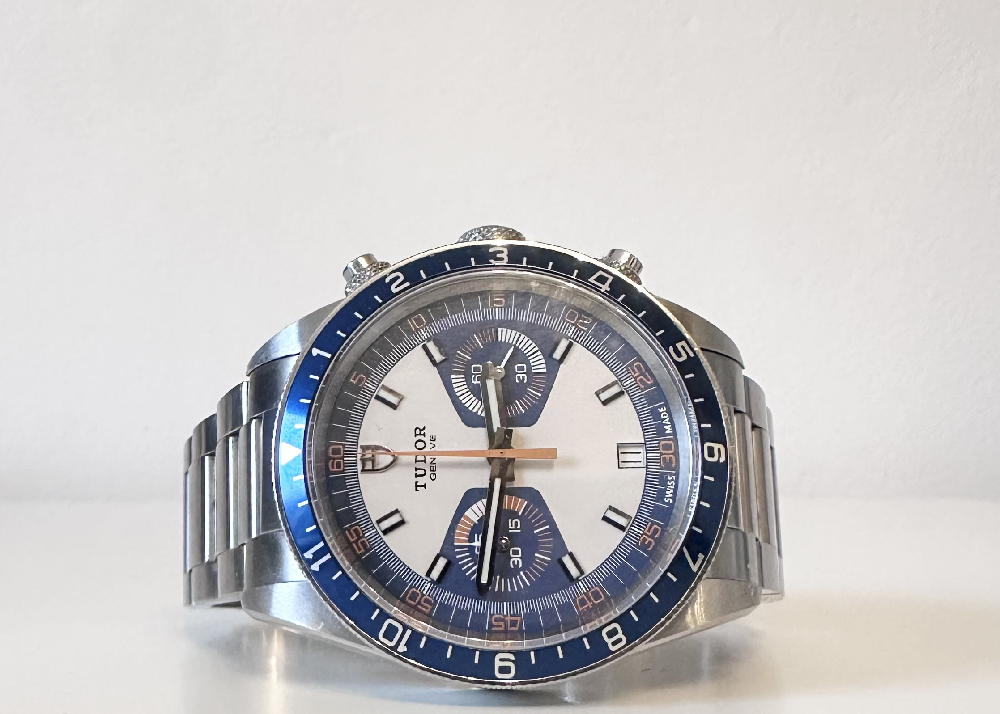

Skriv til os
Interesseret i dette ur?
Spørg om hvad som helst, eller aftal en besigtigelse. Du hører personligt svar, som regel samme dag.
- Emailanton@allintime.dk
- Telefon+45 22 72 00 73
- Instagram@allintime.dk
Mere fra All in Time
Du synes måske også om

Speedmaster Moonwatch
DKK 49.500
En ikonisk Omega Speedmaster Moonwatch Professional med elegant hvidlakeret skive, sorte kontrastdetaljer og klassisk stålkonstruktion. Modellen viderefører det legendariske Moonwatch-design, der har været en del af Omegas historie inden for rumfart, og kombinerer vintage-inspirerede detaljer med det moderne Co-Axial Master Chronometer-kaliber 3861. Et tidløst og karakterfuldt ur, der forener historisk arv, teknisk præcision og et raffineret udtryk.

Fastrider Black Shield
DKK 21.995
Tudor Fastrider Black Shield fra 2022 med mat sort keramisk kasse, sort skive og røde detaljer. Kronografens tre tællere og den faste tachymeterlynette understreger det motorsportsinspirerede design. Den sorte gummirem holder udtrykket enkelt og sporty, mens de røde markeringer giver uret kant.

Heritage Chrono Blue
DKK 22.995
Tudor Heritage Chrono Blue fra 2014 med blå lynette, lys skive og orange detaljer. De to markante kronograftællere giver uret sit karakteristiske retropræg, mens stållænken fuldender det sporty udtryk. Et farverigt alternativ til den klassiske sorte kronograf.